Outcomes
Context
ButterflyMX is an access control technology company for multi-family properties that gives residents the ability to open doors remotely to their building.
The resident mobile app was an opportunity to expand our resident app experience beyond just opening doors: amenity reservations, maintenance requests, building notifications, rent payments, and building information and support.
The problem. The app wasn't originally designed to support additional features outside of access.
The objectives. Design the future vision of the app for scale. Validate and introduce the right features for residents at the right time. Deliver a best-in-class UX. Embed the app in day-to-day activities. Elevate the visual design and identity.
Research Planning
ButterflyMX was still new to larger, more formal research and discovery processes. I worked closely with our PM to draft a compelling plan to convince leadership of the value and need to validate our direction and concept.
- Competitive analysis. Analyze 8 competitors to understand what kind of experiences exist today for residents.
- Card sorting exercise. Hold 6 sessions to determine how people would expect to categorize and group content.
- App map ideation. Utilize previous learnings and organize content to determine the best approach for scaling up new offerings.
- User testing and feedback. Conduct user testing to capture feedback and validate if the proposed IA makes sense to users.
- Visual design and app UI. Elevate the app UX and UI to support key flows and screens required for each feature, both new and existing.
Leadership approved our plan and gave us the time to deliver a proof of concept. Due to limited resources and engineering's focus on larger priorities, we were able to advocate for the time needed to execute this plan with no pushback.
Competitive Analysis
We looked at 8 competitors to understand what kind of experiences exist today for residents: which features were most consistent and common, how they organized content, how they prioritized content, and how users navigate features and content in the app.
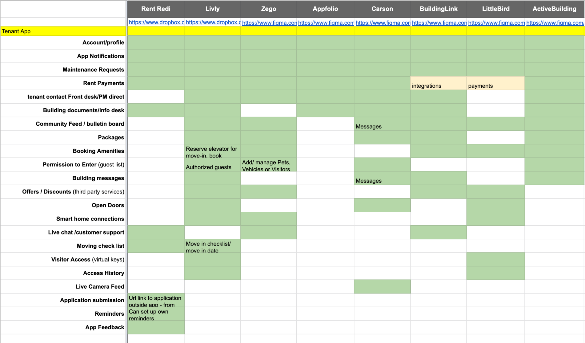
Results.
- Notifications are imperative, the most common and high value across all apps.
- The most common features connect the building and resident through communication channels.
- Guest access, or "permission to enter," is a top need for more secure buildings that manage visitor access.
- Home screens show a prioritized list of high frequency and/or high value actions like opening doors, creating guest access, or important notifications.
- Account sections consistently contain information about the user, their lease, payments, and app settings and preferences.
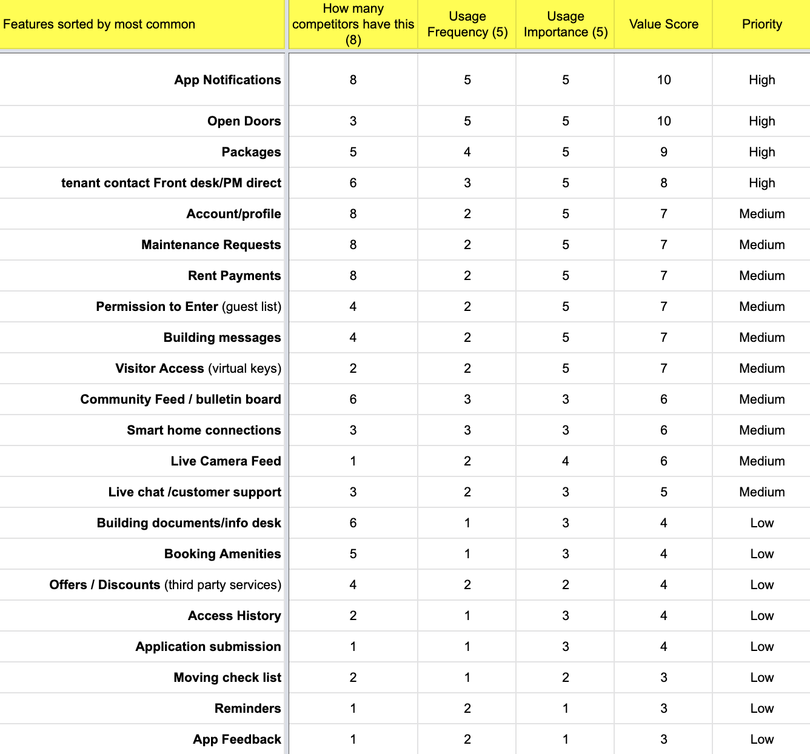
Card Sorting Exercise
I consulted with our PM to help format the cards to be more contextual to user actions, then ran 45-minute sessions with 6 participants. Each was presented a scenario and asked to group and categorize the cards.
"You are a resident in a large multi-family building. Your rent is a little expensive but the building is modern, clean, and has a lot to offer that meets your needs. You feel safe and secure, and your guests are impressed with the property."
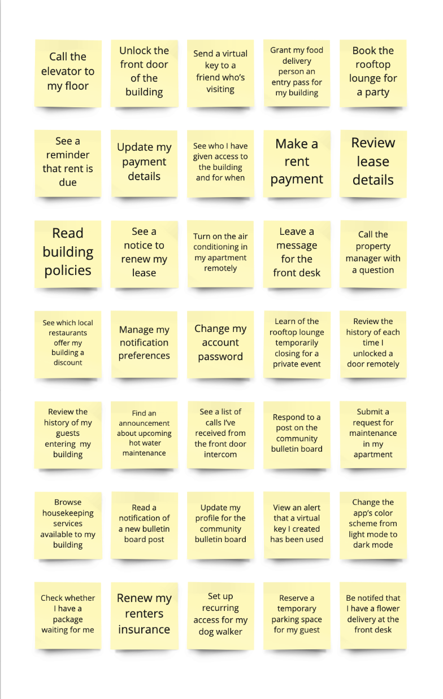
Emerging Themes
Utilizing outcomes from our competitive analysis and card sorting, we began to synthesize our findings, consolidating and reducing our categories through commonality. Four themes emerged, in residents' own words:
- Access (residents and guests). "Access I control for myself and others."
- Building services. "Things I can do in my building."
- Building updates. "Things I need to know about my building."
- Account settings. "Things regarding my profile, app settings, payment details, and preferences."
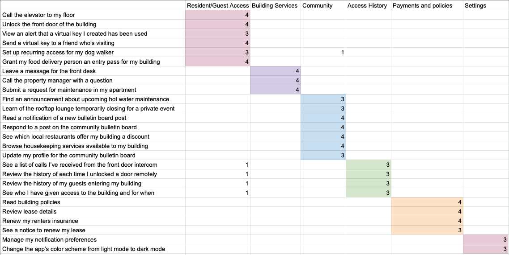
App Map Ideation
During a team off-site, I led a brainstorm exercise with the design team to tackle our app map organization and explore possibilities that we could test for our new navigation. There were still open questions about where certain features might live. Some categories had significant overlap, like building, community, and notifications. The candidate sections on the wall: Home, Guest Access, Building Services, Community, Account, and Notifications.
What we landed on went to product first. Product approved it and felt good going forward with testing on the new IA. Engineering was brought into the conversation once we had a direction, to comment on the constraints of the platform, the level of effort, and how we would need to think about changing the app over time. That conversation is where the phased rollout came from.
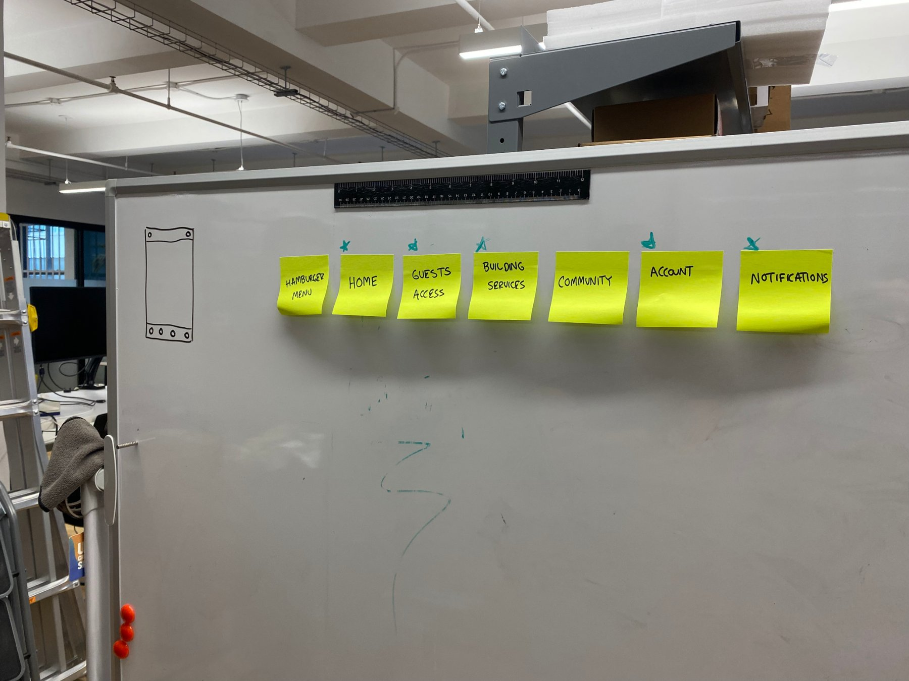
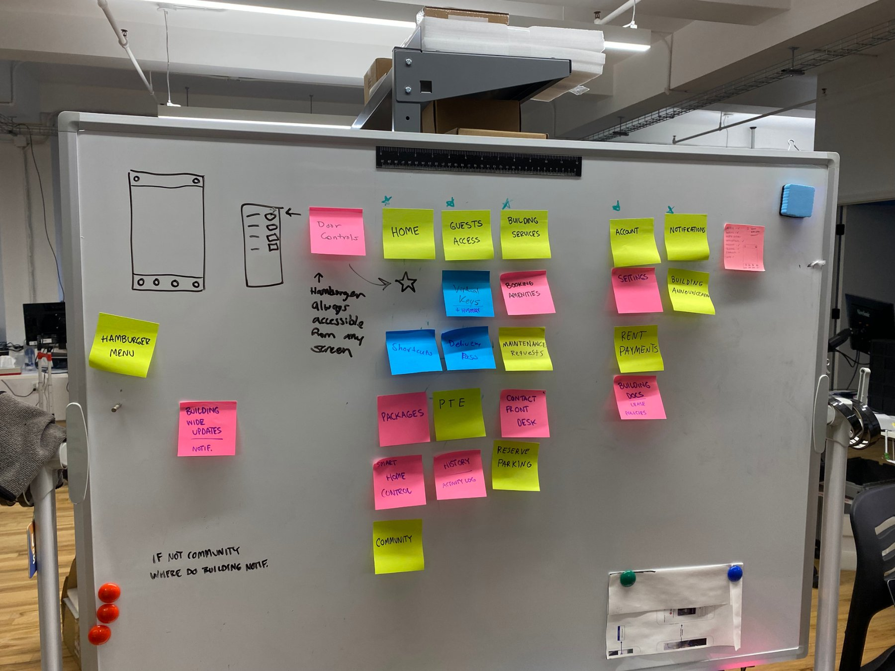
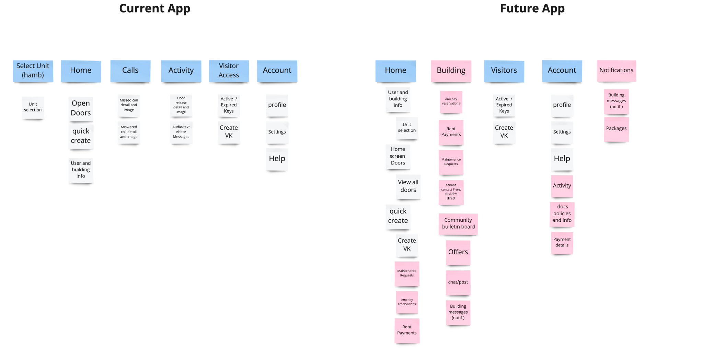
IA Testing
Using the UserZoom platform, we launched an IA user test to gather feedback on our proposed app IA concept, with 10 participants targeting residents in multi-family buildings. We surveyed their current resident experience and building, including their attitudes about the importance of certain features or services, and identified where the participants would expect to find certain features and content, and if the layout and taxonomy made sense to them.
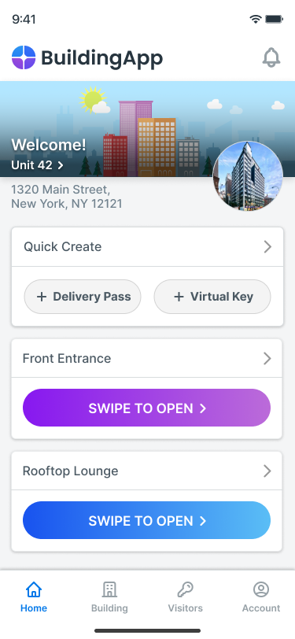
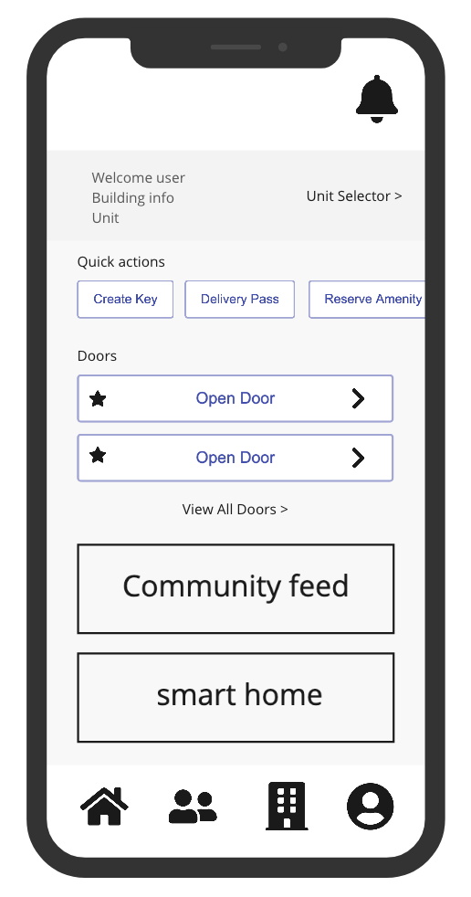
Testing Feedback
Despite minor technical challenges, a majority of users understood what the app was for and where to find key features.
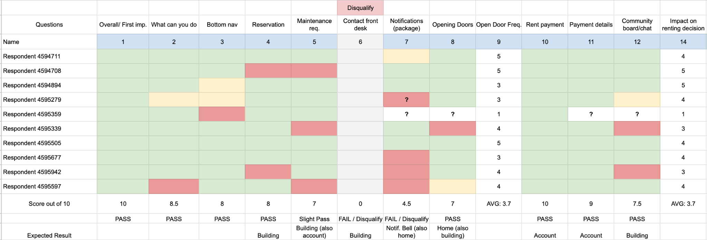
Survey and Testing Results
Attitudes and preferences.
- Residents valued having amenities in their building, while community board communications were less important.
- Residents were not concerned about having a log of historical guest access, but they did care to be notified when a guest arrived or entered.
- Residents were most interested in being notified of maintenance in the building and package deliveries.
- Residents expected to be able to customize the app and tailor it to their preferences.
Action items.
- Allow more customization and the ability to arrange items on the home screen.
- Consider quick actions on home for other resident needs.
- Allow flexibility to take action in multiple ways.
- Make the notifications bell more prominent.
- Access history can be nested in the account tab (low priority and necessity).
- Community bulletin board would be deprioritized and assessed for a future phase.
The New Architecture
The old navigation had five tabs: Home, Calls, Activity, Visitor Access, and Account. The new one has four: Home, Building, Visitor Access, and Account, with Building as the new surface for services and notifications where residents expected them.
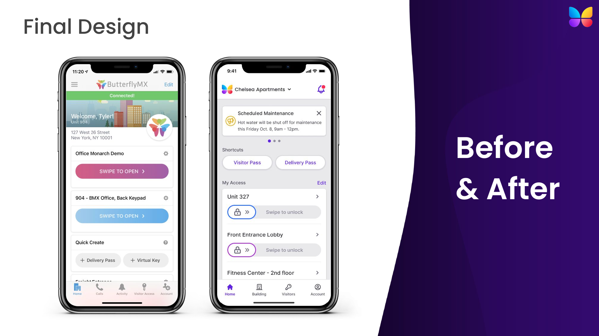
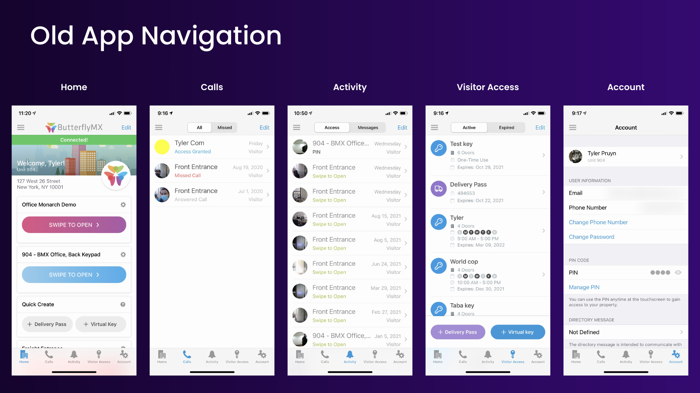
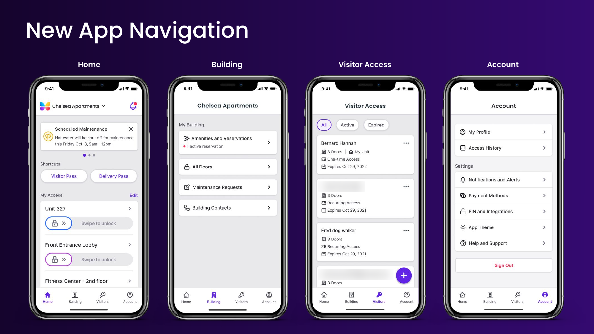
The rollout plan
We weren't going to do everything at once. With engineering's read on constraints and level of effort, we phased the work: the highest priority changes first, the ones we needed in order to scale up the identity, the visuals, and the architecture of the app over time. Each new feature had a place to nest as it landed, so the app could evolve slowly without another re-architecture.

Building tab: amenity reservations
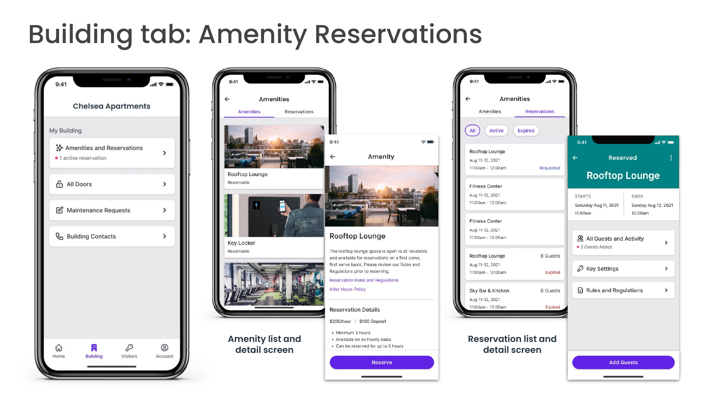
Account section
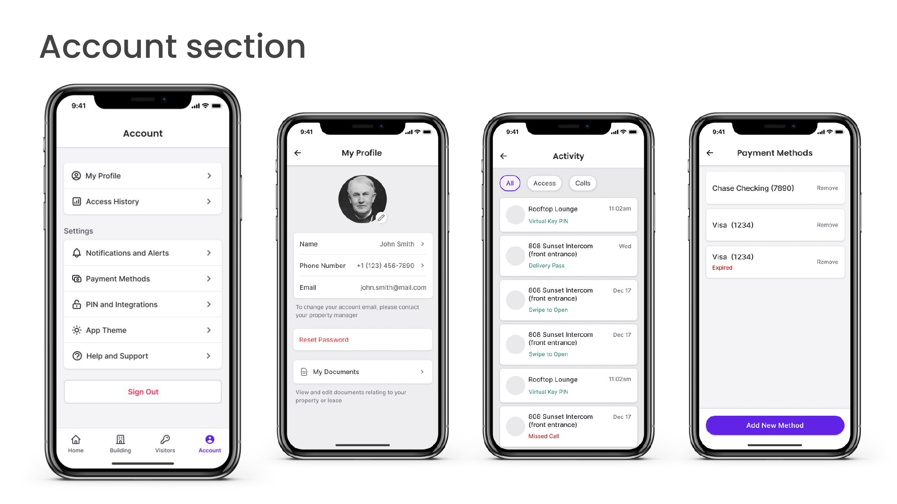
Impact & Outcomes
As of today:
- The app went live and currently has a 4.9 rating on the App Store across 100,000 ratings.
- This redesign changed the way the company values user research and testing and laid the initial groundwork for the future resident feature updates and beyond.
- The app continues to scale, allowing the business to partner with smart home and smart lock integration companies, as well as expand into other verticals, technology, and markets.
- The app redesign and the time afforded allowed us to design a cohesive and consistent system that has been embedded in all of ButterflyMX's products, making it stand out among competitors in both its identity and as an industry leader.